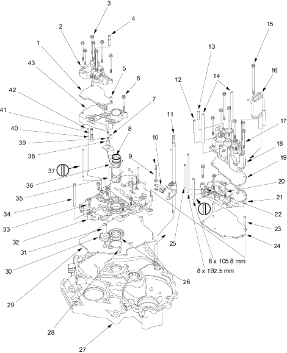

|
- LOCK-UP SEPARATOR PLATE
- LOCK-UP VALVE BODY
- 6 x 1.0 mm, 7 Bolts
- ATF FEED PIPE
(7-position)
- DOWEL PIN
- 6 X 1.0 mm, 1 Bolt
- DOWEL PIN
- O-RING
Replace.
- DETENT ARM SHAFT
- WASHER
- DETENT ARM
- CONTROL SHAFT
- ATF FEED PIPE
8 x 62 mm
- ATF FEED PIPE
8 x 40 mm
- ATF FEED PIPE
8 x 145 mm
- 6 x 1.0 mm, 1 Bolt
- ATF STRAINER
- 6 x 1.0 mm, 8 Bolts
- SERVO BODY
- SERVO SEPARATOR PLATE
- 6 x 1.0 mm, 3 Bolts
- SECONDARY VALVE BODY
- STOP SHAFT BRACKET
- DOWEL PIN, 8 x 40 mm
- SECONDARY SEPARATOR PLATE
- ATF FEED PIPE,
8 x 118 mm
- ATF PUMP DRIVE GEAR
- TORQUE CONVERTER HOUSING
- DOWEL PIN
- MAIN SEPARATOR PLATE
- ATF PUMP DRIVEN GEAR
- ATF PUMP DRIVEN GEAR SHAFT
- MAIN VALVE BODY
- 6 x 1.0 mm, 5 Bolts
- ATF FEED PIPE, 8 x 112 mm
- STATOR SHAFT STOP
- STATOR SHAFT
- ATF FEED PIPE, 8 x 138.8 mm
- TORQUE CONVERTER CHECK VALVE
- TORQUE CONVERTER CHECK VALVE SPRING
- COOLER RELIEF
- COOLER RELIEF VALVE SPRING
- ATF FEED PIPE,
8 x 220 mm, (7-position)
- REGULATOR VALVE BODY
|